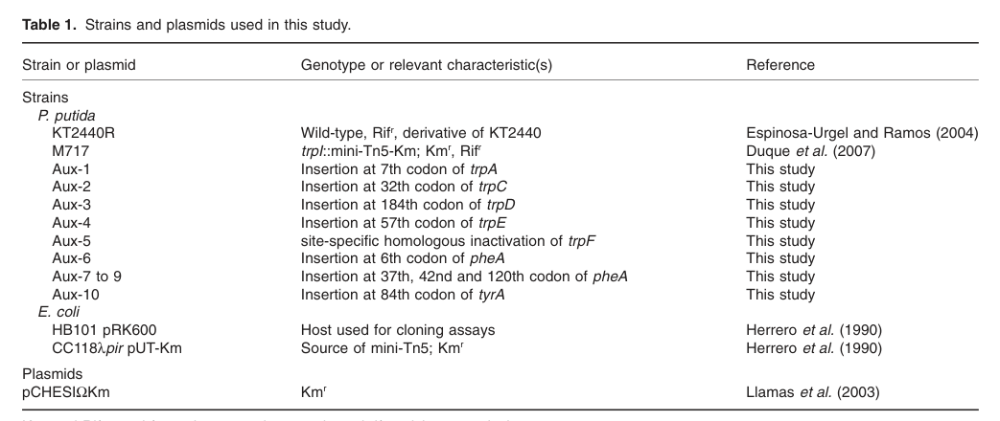

Anthranilate phosphoribosyltransferase (TrpD, EC 2.4.2.18), a cytosolic Mg2+-dependent enzyme that catalyzes the second committed step of L-tryptophan biosynthesis. It transfers the phosphoribosyl group of 5-phospho-alpha-D-ribose 1-diphosphate (PRPP) to anthranilate, producing N-(5-phospho-beta-D-ribosyl)-anthranilate (PRA) and diphosphate. In Pseudomonas putida KT2440 the enzyme is a monofunctional anthranilate phosphoribosyltransferase (the glutamine amidotransferase component of anthranilate synthase is encoded by a separate gene, trpG), belongs to the anthranilate phosphoribosyltransferase family (HAMAP MF_00211), and acts as a homodimer binding two magnesium ions per monomer. Loss of trpD function causes tryptophan auxotrophy that is rescued by L-tryptophan or indole, consistent with its position upstream of the indole/tryptophan branch in the chorismate-derived aromatic amino-acid biosynthetic route.
| GO Term | Evidence | Action | Reason |
|---|---|---|---|
|
GO:0000162
L-tryptophan biosynthetic process
|
IEA
GO_REF:0000120 |
ACCEPT |
Summary: TrpD catalyzes the second step of tryptophan biosynthesis (anthranilate to PRA). This is the core biological process for this gene, supported by the conserved pathway role and by experimental tryptophan auxotrophy of P. putida KT2440 trpD mutants.
Reason: Correct core biological process. Consistent with the UniProt pathway annotation (L-tryptophan from chorismate, step 2/5) and with experimental auxotrophy/rescue evidence in KT2440.
|
|
GO:0000287
magnesium ion binding
|
IEA
GO_REF:0000104 |
ACCEPT |
Summary: The enzyme binds two Mg2+ ions per monomer, which assist PRPP binding. UniProt documents specific Mg2+ binding residues (positions 94, 227, 228).
Reason: Magnesium is a required cofactor for this PRPP-dependent phosphoribosyltransferase; supported by HAMAP rule and modeled metal-binding sites.
|
|
GO:0004048
anthranilate phosphoribosyltransferase activity
|
IEA
GO_REF:0000120 |
ACCEPT |
Summary: This is the specific, defining molecular function of TrpD (EC 2.4.2.18), transferring the phosphoribosyl group of PRPP to anthranilate to form PRA.
Reason: Core molecular function. Maps directly to EC 2.4.2.18 / RHEA:11768 and the anthranilate phosphoribosyltransferase family assignment (HAMAP MF_00211).
|
|
GO:0005829
cytosol
|
IEA
GO_REF:0000118 |
ACCEPT |
Summary: As a soluble biosynthetic enzyme in the tryptophan pathway, TrpD acts in the cytosol. No experimental localization in KT2440, but this is the parsimonious and family-consistent compartment.
Reason: Appropriate cellular component for a cytoplasmic amino-acid biosynthetic enzyme; consistent with TreeGrafter inference across the family.
|
|
GO:0016757
glycosyltransferase activity
|
IEA
GO_REF:0000002 |
MARK AS OVER ANNOTATED |
Summary: This is a high-level grouping term derived from the InterPro "Glycosyl transferase family 3" domain. The actual activity is the more specific anthranilate phosphoribosyltransferase (a pentosyltransferase, GO:0016763 branch), already captured by GO:0004048.
Reason: Uninformative parent term that does not accurately describe the enzyme's function; the specific activity (GO:0004048) and its proper parent pentosyltransferase (GO:0016763) are already annotated. Retaining glycosyltransferase activity is redundant and potentially misleading.
|
|
GO:0016763
pentosyltransferase activity
|
IEA
GO_REF:0000117 |
KEEP AS NON CORE |
Summary: Correct but general parent of the specific anthranilate phosphoribosyltransferase activity. EC 2.4.2.18 is a pentosyltransferase, so this term is accurate.
Reason: True but uninformative relative to the specific GO:0004048 annotation; retain as a correct higher-level grouping rather than the core function.
|
This report is retrieval-only and is generated directly from Asta results.
search_papers_by_relevance with snippet_search.The research report should be a detailed narrative explaining the function, biological processes, and localization of the gene product. Citations should be given for all claims.
You should prioritize authoritative reviews and primary scientific literature when conducting research. You can supplement
this with annotations you find in gene/protein databases, but these can be outdated or inaccurate.
We are specifically interested in the primary function of the gene - for enzymes, what reaction is catalyzed, and what is the substrate specificity? For transporters, what is the substrate? For structural proteins or adapters, what is the broader structural role? For signaling molecules, what is the role in the pathway.
We are interested in where in or outside the cell the gene product carries out its function.
We are also interested in the signaling or biochemical pathways in which the gene functions. We are less interested in broad pleiotropic effects, except where these elucidate the precise role.
Include evidence where possible. We are interested in both experimental evidence as well as inference from structure, evolution, or bioinformatic analysis. Precise studies should be prioritized over high-throughput, where available.
The target protein TrpD in Pseudomonas putida KT2440 (UniProt Q88QR7, ordered locus PP_0421) is anthranilate phosphoribosyltransferase (EC 2.4.2.18), a cytosolic PRPP-dependent phosphoribosyltransferase in the tryptophan de novo biosynthesis pathway. In KT2440, trpD is genetically and transcriptionally linked to trpG and trpC in a trpGDC operon, and loss-of-function causes tryptophan auxotrophy that can be rescued by pathway end products/intermediates (L-tryptophan; indole), consistent with the canonical pathway position. (molinahenares2009functionalanalysisof pages 2-4, molinahenares2009functionalanalysisof pages 4-6, molina‐henares2010identificationofconditionally pages 6-7)
Anthranilate phosphoribosyltransferase (TrpD; EC 2.4.2.18) catalyzes transfer of a phosphoribosyl group from PRPP (5-phospho-α-D-ribose-1-diphosphate) to anthranilate, yielding N-(5-phospho-β-D-ribosyl)-anthranilate (PRA) and pyrophosphate (PPi). (hovejensen2017phosphoribosyldiphosphate(prpp) pages 50-52, parthasarathy2018athreeringcircus pages 6-8)
This step is an early committed reaction in the tryptophan biosynthesis route from chorismate: anthranilate is produced by TrpE/TrpG (anthranilate synthase components), and TrpD converts anthranilate into the ribosylated intermediate that proceeds through subsequent transformations toward the indole ring and ultimately tryptophan. (hovejensen2017phosphoribosyldiphosphate(prpp) pages 50-52, parthasarathy2018athreeringcircus pages 6-8)
A widely cited enzymology review of PRPP-dependent enzymes describes TrpD enzymes as typically homodimeric proteins with a two-domain architecture (N-terminal helical domain and larger C-terminal α/β domain) that creates an active-site cleft for binding PRPP and anthranilate. Divalent cations (Mg2+ or Mn2+) promote PRPP binding, and conserved motifs (including a glycine-rich region involved in phosphate binding) are characteristic. Structural studies in bacteria have supported a model involving substrate capture and movement of anthranilate through multiple binding sites/a channel toward the catalytic configuration that enables nucleophilic attack on PRPP. (hovejensen2017phosphoribosyldiphosphate(prpp) pages 50-52, parthasarathy2018athreeringcircus pages 6-8, hovejensen2017phosphoribosyldiphosphate(prpp) pages 78-78)
These mechanistic and fold-level features are not specific measurements on P. putida KT2440 TrpD in the retrieved documents, but they represent the authoritative current understanding used to support functional inference from homology for bacterial TrpD-family members (such as Q88QR7). (hovejensen2017phosphoribosyldiphosphate(prpp) pages 50-52, parthasarathy2018athreeringcircus pages 6-8)
A functional genetics study of aromatic amino-acid biosynthesis in P. putida KT2440 identifies PP_0421 as trpD, encoding anthranilate phosphoribosyltransferase, and reports a tryptophan-auxotrophic transposon mutant (Aux-3) with a mini-Tn5 insertion at the 184th codon of PP_0421/trpD, linking disruption of PP_0421 to tryptophan auxotrophy. (molinahenares2009functionalanalysisof pages 2-4, molinahenares2009functionalanalysisof pages 1-2)
This directly matches the UniProt identity provided by the user (Q88QR7; PP_0421; “Anthranilate phosphoribosyltransferase”). (molinahenares2009functionalanalysisof pages 2-4)
In KT2440, trpD is embedded in a trpG–trpD–trpC transcriptional unit (trpGDC operon). RT-PCR evidence supports co-transcription across the trpG–trpD–trpC boundaries; the genomic spacing/overlap also supports operon logic (trpG–trpD separated by 9 nt; trpD and trpC overlapping by 6 nt). The same study reports that trpE is transcribed as a monocistronic unit distinct from trpGDC. (molinahenares2009functionalanalysisof pages 2-4, molinahenares2009functionalanalysisof pages 4-6, molinahenares2009functionalanalysisof pages 7-8)
Visual evidence for this gene organization and transcriptional-unit mapping is provided in the extracted Table/Figure crops. (molinahenares2009functionalanalysisof media 8eee5d0d, molinahenares2009functionalanalysisof media f71ebd0e)
KT2440 trpD mutants are unable to grow on minimal medium and can be rescued by supplementation. In pathway-intermediate feeding experiments, the trpD mutant grows with tryptophan and indole, consistent with TrpD operating upstream of indole and tryptophan formation (i.e., loss blocks endogenous synthesis but can be bypassed by supplying downstream metabolites). (molinahenares2009functionalanalysisof pages 4-6)
In an independent genome-wide mutant library study focused on growth on minimal medium, a trpD mutant is auxotrophic on M9 and growth is restored by L-tryptophan (while D-tryptophan does not rescue), reinforcing that trpD is required for endogenous tryptophan biosynthesis under minimal conditions. (molina‐henares2010identificationofconditionally pages 6-7)
The KT2440 gene organization places tryptophan biosynthesis genes in multiple genomic regions. A regulatory gene trpI is described as divergently transcribed relative to trpAB and annotated as encoding a repressor, indicating local transcriptional regulation at the trpAB locus that is physically separated from trpGDC. (molinahenares2009functionalanalysisof pages 2-4, molinahenares2009functionalanalysisof pages 4-6)
No direct, KT2440-specific experimental evidence for subcellular localization of TrpD (e.g., fractionation, microscopy) was identified in the retrieved texts. Given its biosynthetic role and the general bacterial paradigm for amino-acid biosynthesis enzymes, the most parsimonious functional localization is intracellular (cytosolic), but this report flags that as inference rather than a demonstrated localization in the cited KT2440 sources. (molinahenares2009functionalanalysisof pages 2-4, hovejensen2017phosphoribosyldiphosphate(prpp) pages 50-52)
In bacteria, tryptophan is biosynthesized from chorismate through anthranilate and downstream intermediates; TrpD catalyzes the PRPP-dependent conversion of anthranilate to PRA, positioning it as a key node linking shikimate/chorismate-derived aromatic metabolism to the indole/tryptophan branch. (hovejensen2017phosphoribosyldiphosphate(prpp) pages 50-52, parthasarathy2018athreeringcircus pages 6-8)
For P. putida KT2440, genetic mapping and rescue phenotypes place trpD squarely in this canonical route, consistent with the conserved trp gene clusters described for pseudomonads. (molinahenares2009functionalanalysisof pages 4-6, molinahenares2009functionalanalysisof pages 7-8)
Because TrpD consumes PRPP, its effective capacity depends on PRPP supply, which is also demanded by many other phosphoribosyltransferases in nucleotide and amino-acid biosynthesis. A comprehensive PRPP review emphasizes PRPP as a widely shared substrate and discusses structural/mechanistic diversity among PRPP-utilizing enzymes, framing TrpD as one member of a broader PRPP-dependent metabolic network. From a systems viewpoint, TrpD can therefore become a flux-control point not only through its own kinetics and regulation but also through competition for PRPP and impacts on PPi handling. (hovejensen2017phosphoribosyldiphosphate(prpp) pages 50-52)
Direct 2023–2024 studies specifically characterizing KT2440 PP_0421/Q88QR7 were not retrieved here; however, 2023–2024 literature demonstrates that TrpD is a highly actionable control node in microbial engineering (anthranilate and tryptophan-derived product pipelines). These applied findings provide strong, contemporary support for TrpD’s functional centrality and substrate role.
Kim et al. engineered E. coli for anthranilate overproduction and explicitly disrupted trpD (described as transferring the phosphoribosyl group to anthranilate) to prevent anthranilate consumption and promote accumulation. In a 7-L fed-batch fermentation, they report ~4 g/L anthranilate. This is an application-level validation that blocking the TrpD step increases anthranilate accumulation in vivo. (kim2023engineeredescherichiacoli pages 1-2)
In their contextualization of the field, the authors also cite prior high performance titers including up to 14 g/L anthranilate in an engineered E. coli strain and 1.5 g/L in a Pseudomonas putida ΔtrpDC strain (the latter supports that trpD-region perturbations are used directly in P. putida backgrounds, though not specifically the KT2440 PP_0421 allele). (kim2023engineeredescherichiacoli pages 2-4)
Mutz et al. engineered Corynebacterium glutamicum for anthranilate production and report that adjusting translation efficiency of trpD (anthranilate phosphoribosyltransferase) along with aroK improved production; their final strain accumulated up to 5.9 g/L (43 mM) anthranilate in bioreactors. This demonstrates modern pathway-balancing strategies that treat TrpD as a tunable valve controlling anthranilate drainage to downstream tryptophan. (mutz2024metabolicengineeringof pages 1-3)
Putri et al. report a TrpD A162D variant in C. glutamicum described as feedback-resistant to L-tryptophan and with increased substrate affinity versus wild-type. Incorporating this engineering, they report 3.1 g/L L-tryptophan in flask culture (with multiple copies/expressions of the variant), enabling downstream biosynthesis of a halogenated natural-product derivative (APRN) with ~28.1–29.5 mg/L titers. This illustrates recent, protein-level engineering of TrpD beyond knockouts or expression tuning. (putri2024fermentativeaminopyrrolnitrinproduction pages 1-3)
A 2024 review on fermentation strategies for tryptophan production in E. coli highlights that the trp operon enzymes are common genetic targets and reports an example where co-overexpression of trpE and trpD produced tryptophan titers up to 45.6 g/L, underscoring that TrpD is not only a drain on anthranilate (when knocked out) but also a needed capacity step when the objective is maximal tryptophan. (ramosvaldovinos2024optimizingfermentationstrategies pages 7-8)
Anthranilate is described as a platform chemical relevant to food ingredients, dyes, perfumes, agrochemicals, pharmaceuticals, and plastics; engineering strategies frequently include disrupting trpD to prevent conversion of anthranilate to PRA, thereby increasing anthranilate accumulation, as validated by 7-L fed-batch production at ~4 g/L in E. coli. (kim2023engineeredescherichiacoli pages 1-2)
Recent work in C. glutamicum demonstrates that engineering TrpD itself (A162D) can raise tryptophan availability (3.1 g/L) and serve as a foundation for production of tryptophan-derived halogenated specialty metabolites (APRN at ~28–29.5 mg/L). (putri2024fermentativeaminopyrrolnitrinproduction pages 1-3)
Structural and mechanistic work on bacterial TrpD—especially in pathogens such as Mycobacterium tuberculosis—has informed inhibitor design through characterization of substrate capture and active-site conformational changes. While not directly a KT2440 application, this is an expert-level rationale for why TrpD remains a target of interest for antimicrobial strategies. (parthasarathy2018athreeringcircus pages 6-8, hovejensen2017phosphoribosyldiphosphate(prpp) pages 78-78)
The table below consolidates organism-specific evidence for KT2440 PP_0421/Q88QR7 versus general mechanistic knowledge and recent engineering applications.
| Claim | Key evidence and quantitative data | Organism context | Source with year and URL |
|---|---|---|---|
| Correct gene identity and function | PP_0421 in Pseudomonas putida KT2440 is identified as trpD, encoding anthranilate phosphoribosyltransferase; Aux-3 carries a mini-Tn5 insertion at the 184th codon of trpD/PP0421, linking disruption to tryptophan auxotrophy. (molinahenares2009functionalanalysisof pages 2-4, molinahenares2009functionalanalysisof pages 1-2) | P. putida KT2440 (target gene Q88QR7 / PP_0421) | Molina-Henares et al., 2009, https://doi.org/10.1111/j.1751-7915.2008.00062.x |
| Biochemical reaction | Anthranilate phosphoribosyltransferase TrpD (EC 2.4.2.18) transfers the phosphoribosyl group from PRPP to anthranilate to form N-(5-phospho-β-D-ribosyl)-anthranilate (PRA) plus PPi; this is an early committed step in tryptophan biosynthesis. (hovejensen2017phosphoribosyldiphosphate(prpp) pages 50-52, parthasarathy2018athreeringcircus pages 6-8) | General bacterial/archaeal TrpD framework used to interpret the P. putida ortholog | Hove-Jensen et al., 2017, https://doi.org/10.1128/mmbr.00040-16; Parthasarathy et al., 2018, https://doi.org/10.3389/fmolb.2018.00029 |
| Pathway role | In P. putida, trpD acts downstream of anthranilate formation and upstream of later indole/tryptophan steps; mutant rescue by tryptophan and indole is consistent with this position in the pathway. (molinahenares2009functionalanalysisof pages 4-6) | P. putida KT2440 | Molina-Henares et al., 2009, https://doi.org/10.1111/j.1751-7915.2008.00062.x |
| Operon context | trpGDC forms an operon in P. putida KT2440; trpE and trpF are monocistronic. Physical organization supports co-transcription: trpG–trpD separated by 9 nt and trpD/trpC overlap by 6 nt; RT-PCR supports a contiguous trpG-trpD-trpC transcript. (molinahenares2009functionalanalysisof pages 2-4, molinahenares2009functionalanalysisof pages 4-6, molinahenares2009functionalanalysisof pages 7-8, molinahenares2009functionalanalysisof media 8eee5d0d) | P. putida KT2440; conserved organization also noted across Pseudomonas spp. | Molina-Henares et al., 2009, https://doi.org/10.1111/j.1751-7915.2008.00062.x |
| Phenotype / essentiality for minimal growth | A trpD mutant fails to grow on M9 minimal medium and is rescued by L-tryptophan; in another assay, trpD mutants grew with tryptophan and indole. A genome-wide mutant screen likewise identified trpD as conditionally essential for minimal-medium growth. (molinahenares2009functionalanalysisof pages 4-6, molina‐henares2010identificationofconditionally pages 6-7) | P. putida KT2440 | Molina-Henares et al., 2009, https://doi.org/10.1111/j.1751-7915.2008.00062.x; Molina-Henares et al., 2010, https://doi.org/10.1111/j.1462-2920.2010.02166.x |
| Regulatory / transcriptional context | The trpAB locus is separate and transcribed divergently from trpI, a repressor-like regulator; trpGDC is in a distinct transcriptional unit from trpE, indicating split pathway organization and local regulatory separation. Direct specific regulation of PP_0421 itself was not detailed beyond operon structure. (molinahenares2009functionalanalysisof pages 2-4, molinahenares2009functionalanalysisof pages 4-6, molinahenares2009functionalanalysisof pages 9-10) | P. putida KT2440 with comparative pointers to fluorescent pseudomonads | Molina-Henares et al., 2009, https://doi.org/10.1111/j.1751-7915.2008.00062.x |
| Structural/mechanistic features supporting annotation | TrpD enzymes are typically homodimeric, with a two-domain fold, Mg2+/Mn2+-assisted PRPP binding, and a conserved glycine-rich PRPP-binding motif; structural studies show anthranilate-binding sites/tunnel features relevant to catalysis. (hovejensen2017phosphoribosyldiphosphate(prpp) pages 50-52, hovejensen2017phosphoribosyldiphosphate(prpp) pages 78-78) | General bacterial TrpD knowledge; not demonstrated directly for P. putida PP_0421 in the gathered snippets | Hove-Jensen et al., 2017, https://doi.org/10.1128/mmbr.00040-16 |
| Localization | No direct subcellular localization experiment for PP_0421/TrpD in P. putida was reported in the gathered evidence; the evidence supports a typical intracellular biosynthetic enzyme role rather than extracellular function. (molinahenares2009functionalanalysisof pages 2-4) | P. putida KT2440 | Molina-Henares et al., 2009, https://doi.org/10.1111/j.1751-7915.2008.00062.x |
| Application: anthranilate accumulation by blocking TrpD step | In engineered E. coli, trpD disruption was used to accumulate anthranilate, reaching about 4 g/L anthranilate in 7-L fed-batch fermentation; the study also cites prior values of 14 g/L in another engineered E. coli strain and 1.5 g/L in P. putida ΔtrpDC as context. (kim2023engineeredescherichiacoli pages 1-2, kim2023engineeredescherichiacoli pages 2-4) | Other bacteria (E. coli primary; P. putida cited as comparison, not PP_0421-specific functional proof) | Kim et al., 2023, https://doi.org/10.3389/fmicb.2023.1081221 |
| Application: anthranilate production via trpD translation tuning | In engineered Corynebacterium glutamicum, translation-efficiency modulation of trpD together with aroK improved anthranilate production; the final strain reached 5.9 g/L (43 mM) anthranilate in bioreactor cultivation. (mutz2024metabolicengineeringof pages 1-3) | Other bacteria; demonstrates practical flux-control value of the TrpD step | Mutz et al., 2024, https://doi.org/10.1111/1751-7915.14388 |
| Application: engineered TrpD variant | In C. glutamicum, TrpD A162D was reported as feedback-resistant to L-tryptophan with increased substrate affinity; strains carrying this variant produced 3.1 g/L L-tryptophan in flask culture, and downstream pathway engineering yielded ~28.1–29.5 mg/L APRN. (putri2024fermentativeaminopyrrolnitrinproduction pages 1-3) | Other bacteria; shows TrpD can be engineered to improve tryptophan-derived product formation | Putri et al., 2024, https://doi.org/10.1186/s12934-024-02424-y |
| Application: high-tryptophan production context | A 2024 review reports that co-overexpression of trpE and trpD in an E. coli production background yielded 45.6 g/L tryptophan, underscoring TrpD as a relevant engineering node in industrial pathway balancing. (ramosvaldovinos2024optimizingfermentationstrategies pages 7-8) | Other bacteria; review-level production context rather than direct P. putida evidence | Ramos-Valdovinos and Martínez-Antonio, 2024, https://doi.org/10.3390/pr12112422 |
Table: This table summarizes direct and indirect evidence for the annotation of Pseudomonas putida KT2440 trpD (UniProt Q88QR7 / PP_0421), separating strain-specific genetic evidence from broader mechanistic and application-oriented TrpD literature. It is useful for distinguishing what is experimentally shown in the target organism versus what is inferred from authoritative studies in other bacteria.
References
(molinahenares2009functionalanalysisof pages 2-4): M. A. Molina-Henares, Adela García‐Salamanca, A. Molina-Henares, J. de la Torre, M. C. Herrera, J. Ramos, and E. Duque. Functional analysis of aromatic biosynthetic pathways in pseudomonas putida kt2440. Microbial biotechnology, 2:91-100, Dec 2009. URL: https://doi.org/10.1111/j.1751-7915.2008.00062.x, doi:10.1111/j.1751-7915.2008.00062.x. This article has 32 citations and is from a peer-reviewed journal.
(molinahenares2009functionalanalysisof pages 4-6): M. A. Molina-Henares, Adela García‐Salamanca, A. Molina-Henares, J. de la Torre, M. C. Herrera, J. Ramos, and E. Duque. Functional analysis of aromatic biosynthetic pathways in pseudomonas putida kt2440. Microbial biotechnology, 2:91-100, Dec 2009. URL: https://doi.org/10.1111/j.1751-7915.2008.00062.x, doi:10.1111/j.1751-7915.2008.00062.x. This article has 32 citations and is from a peer-reviewed journal.
(molina‐henares2010identificationofconditionally pages 6-7): M. Antonia Molina‐Henares, Jesús De La Torre, Adela García‐Salamanca, A. Jesús Molina‐Henares, M. Carmen Herrera, Juan L. Ramos, and Estrella Duque. Identification of conditionally essential genes for growth of pseudomonas putida kt2440 on minimal medium through the screening of a genome‐wide mutant library. Environmental Microbiology, 12:1468-1485, Jun 2010. URL: https://doi.org/10.1111/j.1462-2920.2010.02166.x, doi:10.1111/j.1462-2920.2010.02166.x. This article has 89 citations and is from a domain leading peer-reviewed journal.
(hovejensen2017phosphoribosyldiphosphate(prpp) pages 50-52): Bjarne Hove-Jensen, Kasper R. Andersen, Mogens Kilstrup, Jan Martinussen, Robert L. Switzer, and Martin Willemoës. Phosphoribosyl diphosphate (prpp): biosynthesis, enzymology, utilization, and metabolic significance. Microbiology and Molecular Biology Reviews, Mar 2017. URL: https://doi.org/10.1128/mmbr.00040-16, doi:10.1128/mmbr.00040-16. This article has 283 citations and is from a domain leading peer-reviewed journal.
(parthasarathy2018athreeringcircus pages 6-8): Anutthaman Parthasarathy, Penelope J. Cross, Renwick C. J. Dobson, Lily E. Adams, Michael A. Savka, and André O. Hudson. A three-ring circus: metabolism of the three proteogenic aromatic amino acids and their role in the health of plants and animals. Frontiers in Molecular Biosciences, Apr 2018. URL: https://doi.org/10.3389/fmolb.2018.00029, doi:10.3389/fmolb.2018.00029. This article has 423 citations.
(hovejensen2017phosphoribosyldiphosphate(prpp) pages 78-78): Bjarne Hove-Jensen, Kasper R. Andersen, Mogens Kilstrup, Jan Martinussen, Robert L. Switzer, and Martin Willemoës. Phosphoribosyl diphosphate (prpp): biosynthesis, enzymology, utilization, and metabolic significance. Microbiology and Molecular Biology Reviews, Mar 2017. URL: https://doi.org/10.1128/mmbr.00040-16, doi:10.1128/mmbr.00040-16. This article has 283 citations and is from a domain leading peer-reviewed journal.
(molinahenares2009functionalanalysisof pages 1-2): M. A. Molina-Henares, Adela García‐Salamanca, A. Molina-Henares, J. de la Torre, M. C. Herrera, J. Ramos, and E. Duque. Functional analysis of aromatic biosynthetic pathways in pseudomonas putida kt2440. Microbial biotechnology, 2:91-100, Dec 2009. URL: https://doi.org/10.1111/j.1751-7915.2008.00062.x, doi:10.1111/j.1751-7915.2008.00062.x. This article has 32 citations and is from a peer-reviewed journal.
(molinahenares2009functionalanalysisof pages 7-8): M. A. Molina-Henares, Adela García‐Salamanca, A. Molina-Henares, J. de la Torre, M. C. Herrera, J. Ramos, and E. Duque. Functional analysis of aromatic biosynthetic pathways in pseudomonas putida kt2440. Microbial biotechnology, 2:91-100, Dec 2009. URL: https://doi.org/10.1111/j.1751-7915.2008.00062.x, doi:10.1111/j.1751-7915.2008.00062.x. This article has 32 citations and is from a peer-reviewed journal.
(molinahenares2009functionalanalysisof media 8eee5d0d): M. A. Molina-Henares, Adela García‐Salamanca, A. Molina-Henares, J. de la Torre, M. C. Herrera, J. Ramos, and E. Duque. Functional analysis of aromatic biosynthetic pathways in pseudomonas putida kt2440. Microbial biotechnology, 2:91-100, Dec 2009. URL: https://doi.org/10.1111/j.1751-7915.2008.00062.x, doi:10.1111/j.1751-7915.2008.00062.x. This article has 32 citations and is from a peer-reviewed journal.
(molinahenares2009functionalanalysisof media f71ebd0e): M. A. Molina-Henares, Adela García‐Salamanca, A. Molina-Henares, J. de la Torre, M. C. Herrera, J. Ramos, and E. Duque. Functional analysis of aromatic biosynthetic pathways in pseudomonas putida kt2440. Microbial biotechnology, 2:91-100, Dec 2009. URL: https://doi.org/10.1111/j.1751-7915.2008.00062.x, doi:10.1111/j.1751-7915.2008.00062.x. This article has 32 citations and is from a peer-reviewed journal.
(kim2023engineeredescherichiacoli pages 1-2): Hye-Jin Kim, Seung-Yeul Seo, Heung-Soon Park, Ji-Young Ko, Si-Sun Choi, Sang Joung Lee, and Eung-Soo Kim. Engineered escherichia coli cell factory for anthranilate over-production. Frontiers in Microbiology, Mar 2023. URL: https://doi.org/10.3389/fmicb.2023.1081221, doi:10.3389/fmicb.2023.1081221. This article has 9 citations and is from a peer-reviewed journal.
(kim2023engineeredescherichiacoli pages 2-4): Hye-Jin Kim, Seung-Yeul Seo, Heung-Soon Park, Ji-Young Ko, Si-Sun Choi, Sang Joung Lee, and Eung-Soo Kim. Engineered escherichia coli cell factory for anthranilate over-production. Frontiers in Microbiology, Mar 2023. URL: https://doi.org/10.3389/fmicb.2023.1081221, doi:10.3389/fmicb.2023.1081221. This article has 9 citations and is from a peer-reviewed journal.
(mutz2024metabolicengineeringof pages 1-3): Mario Mutz, Vincent Brüning, Christian Brüsseler, Moritz‐Fabian Müller, Stephan Noack, and Jan Marienhagen. Metabolic engineering of corynebacterium glutamicum for the production of anthranilate from glucose and xylose. Microbial Biotechnology, Jan 2024. URL: https://doi.org/10.1111/1751-7915.14388, doi:10.1111/1751-7915.14388. This article has 15 citations and is from a peer-reviewed journal.
(putri2024fermentativeaminopyrrolnitrinproduction pages 1-3): Virginia Ryandini Melati Putri, Min-Hee Jung, Ji-Young Lee, Mi-Hyang Kwak, Theavita Chatarina Mariyes, Anastasia Kerbs, Volker F. Wendisch, Hee Jeong Kong, Young-Ok Kim, and Jin-Ho Lee. Fermentative aminopyrrolnitrin production by metabolically engineered corynebacterium glutamicum. Microbial Cell Factories, May 2024. URL: https://doi.org/10.1186/s12934-024-02424-y, doi:10.1186/s12934-024-02424-y. This article has 6 citations and is from a peer-reviewed journal.
(ramosvaldovinos2024optimizingfermentationstrategies pages 7-8): Miguel Angel Ramos-Valdovinos and Agustino Martínez-Antonio. Optimizing fermentation strategies for enhanced tryptophan production in escherichia coli: integrating genetic and environmental controls for industrial applications. Processes, Nov 2024. URL: https://doi.org/10.3390/pr12112422, doi:10.3390/pr12112422. This article has 10 citations.
(molinahenares2009functionalanalysisof pages 9-10): M. A. Molina-Henares, Adela García‐Salamanca, A. Molina-Henares, J. de la Torre, M. C. Herrera, J. Ramos, and E. Duque. Functional analysis of aromatic biosynthetic pathways in pseudomonas putida kt2440. Microbial biotechnology, 2:91-100, Dec 2009. URL: https://doi.org/10.1111/j.1751-7915.2008.00062.x, doi:10.1111/j.1751-7915.2008.00062.x. This article has 32 citations and is from a peer-reviewed journal.

id: Q88QR7
gene_symbol: trpD
product_type: PROTEIN
status: DRAFT
taxon:
id: NCBITaxon:160488
label: Pseudomonas putida (strain ATCC 47054 / DSM 6125 / CFBP 8728 / NCIMB 11950 / KT2440)
description: Anthranilate phosphoribosyltransferase (TrpD, EC 2.4.2.18), a cytosolic Mg2+-dependent enzyme that catalyzes the second committed step of L-tryptophan biosynthesis. It transfers the phosphoribosyl group of 5-phospho-alpha-D-ribose 1-diphosphate (PRPP) to anthranilate, producing N-(5-phospho-beta-D-ribosyl)-anthranilate (PRA) and diphosphate. In Pseudomonas putida KT2440 the enzyme is a monofunctional anthranilate phosphoribosyltransferase (the glutamine amidotransferase component of anthranilate synthase is encoded by a separate gene, trpG), belongs to the anthranilate phosphoribosyltransferase family (HAMAP MF_00211), and acts as a homodimer binding two magnesium ions per monomer. Loss of trpD function causes tryptophan auxotrophy that is rescued by L-tryptophan or indole, consistent with its position upstream of the indole/tryptophan branch in the chorismate-derived aromatic amino-acid biosynthetic route.
references:
- id: GO_REF:0000002
title: Gene Ontology annotation through association of InterPro records with GO terms
findings: []
- id: GO_REF:0000104
title: Electronic Gene Ontology annotations created by transferring manual GO annotations between related proteins based on shared sequence features
findings: []
- id: GO_REF:0000117
title: Electronic Gene Ontology annotations created by ARBA machine learning models
findings: []
- id: GO_REF:0000118
title: TreeGrafter-generated GO annotations
findings: []
- id: GO_REF:0000120
title: Combined Automated Annotation using Multiple IEA Methods
findings: []
- id: PMID:21261884
title: Functional analysis of aromatic biosynthetic pathways in Pseudomonas putida KT2440.
findings:
- statement: PP_0421 is trpD encoding anthranilate phosphoribosyltransferase; a transposon insertion at codon 184 of trpD causes tryptophan auxotrophy, and trpD lies in a trpGDC operon. The trpD mutant is rescued by L-tryptophan and indole.
reference_section_type: RESULTS
reference_review:
relevance: HIGH
correctness: VERIFIED
review_notes: 'Corrected identifier. The previous PMID:19825068 could not be resolved on PubMed. PMID:21261884 recovered from DOI 10.1111/j.1751-7915.2008.00062.x (Molina-Henares et al., Microbial Biotechnology 2:91-100, 2009) and PubMed-verified; cached title matches. Establishes PP_0421 = trpD, its role in tryptophan auxotrophy, and the trpGDC operon structure in KT2440.'
- id: PMID:20158506
title: Identification of conditionally essential genes for growth of Pseudomonas putida KT2440 on minimal medium through the screening of a genome-wide mutant library.
findings:
- statement: A trpD mutant is auxotrophic on M9 minimal medium with growth restored by L-tryptophan, confirming trpD is required for endogenous tryptophan biosynthesis.
reference_section_type: RESULTS
reference_review:
relevance: MEDIUM
correctness: VERIFIED
review_notes: 'Corrected identifier. The previous PMID:20236172 was a WRONG identifier (resolved to "Pregabalin in the treatment of post-traumatic peripheral neuropathic pain", an unrelated Eur J Neurol clinical trial). PMID:20158506 recovered from DOI 10.1111/j.1462-2920.2010.02166.x (Molina-Henares et al., Environmental Microbiology 2010) and PubMed-verified; cached title matches.'
existing_annotations:
- term:
id: GO:0000162
label: L-tryptophan biosynthetic process
evidence_type: IEA
original_reference_id: GO_REF:0000120
qualifier: involved_in
review:
summary: TrpD catalyzes the second step of tryptophan biosynthesis (anthranilate to PRA). This is the core biological process for this gene, supported by the conserved pathway role and by experimental tryptophan auxotrophy of P. putida KT2440 trpD mutants.
action: ACCEPT
reason: Correct core biological process. Consistent with the UniProt pathway annotation (L-tryptophan from chorismate, step 2/5) and with experimental auxotrophy/rescue evidence in KT2440.
- term:
id: GO:0000287
label: magnesium ion binding
evidence_type: IEA
original_reference_id: GO_REF:0000104
qualifier: enables
review:
summary: The enzyme binds two Mg2+ ions per monomer, which assist PRPP binding. UniProt documents specific Mg2+ binding residues (positions 94, 227, 228).
action: ACCEPT
reason: Magnesium is a required cofactor for this PRPP-dependent phosphoribosyltransferase; supported by HAMAP rule and modeled metal-binding sites.
- term:
id: GO:0004048
label: anthranilate phosphoribosyltransferase activity
evidence_type: IEA
original_reference_id: GO_REF:0000120
qualifier: enables
review:
summary: This is the specific, defining molecular function of TrpD (EC 2.4.2.18), transferring the phosphoribosyl group of PRPP to anthranilate to form PRA.
action: ACCEPT
reason: Core molecular function. Maps directly to EC 2.4.2.18 / RHEA:11768 and the anthranilate phosphoribosyltransferase family assignment (HAMAP MF_00211).
- term:
id: GO:0005829
label: cytosol
evidence_type: IEA
original_reference_id: GO_REF:0000118
qualifier: located_in
review:
summary: As a soluble biosynthetic enzyme in the tryptophan pathway, TrpD acts in the cytosol. No experimental localization in KT2440, but this is the parsimonious and family-consistent compartment.
action: ACCEPT
reason: Appropriate cellular component for a cytoplasmic amino-acid biosynthetic enzyme; consistent with TreeGrafter inference across the family.
- term:
id: GO:0016757
label: glycosyltransferase activity
evidence_type: IEA
original_reference_id: GO_REF:0000002
qualifier: enables
review:
summary: This is a high-level grouping term derived from the InterPro "Glycosyl transferase family 3" domain. The actual activity is the more specific anthranilate phosphoribosyltransferase (a pentosyltransferase, GO:0016763 branch), already captured by GO:0004048.
action: MARK_AS_OVER_ANNOTATED
reason: Uninformative parent term that does not accurately describe the enzyme's function; the specific activity (GO:0004048) and its proper parent pentosyltransferase (GO:0016763) are already annotated. Retaining glycosyltransferase activity is redundant and potentially misleading.
- term:
id: GO:0016763
label: pentosyltransferase activity
evidence_type: IEA
original_reference_id: GO_REF:0000117
qualifier: enables
review:
summary: Correct but general parent of the specific anthranilate phosphoribosyltransferase activity. EC 2.4.2.18 is a pentosyltransferase, so this term is accurate.
action: KEEP_AS_NON_CORE
reason: True but uninformative relative to the specific GO:0004048 annotation; retain as a correct higher-level grouping rather than the core function.
core_functions:
- description: Catalyzes the Mg2+-dependent transfer of the phosphoribosyl group of PRPP to anthranilate, producing N-(5-phospho-beta-D-ribosyl)-anthranilate (PRA), the second committed step of L-tryptophan biosynthesis.
supported_by:
- reference_id: PMID:21261884
molecular_function:
id: GO:0004048
label: anthranilate phosphoribosyltransferase activity
directly_involved_in:
- id: GO:0000162
label: L-tryptophan biosynthetic process
{kind=link}